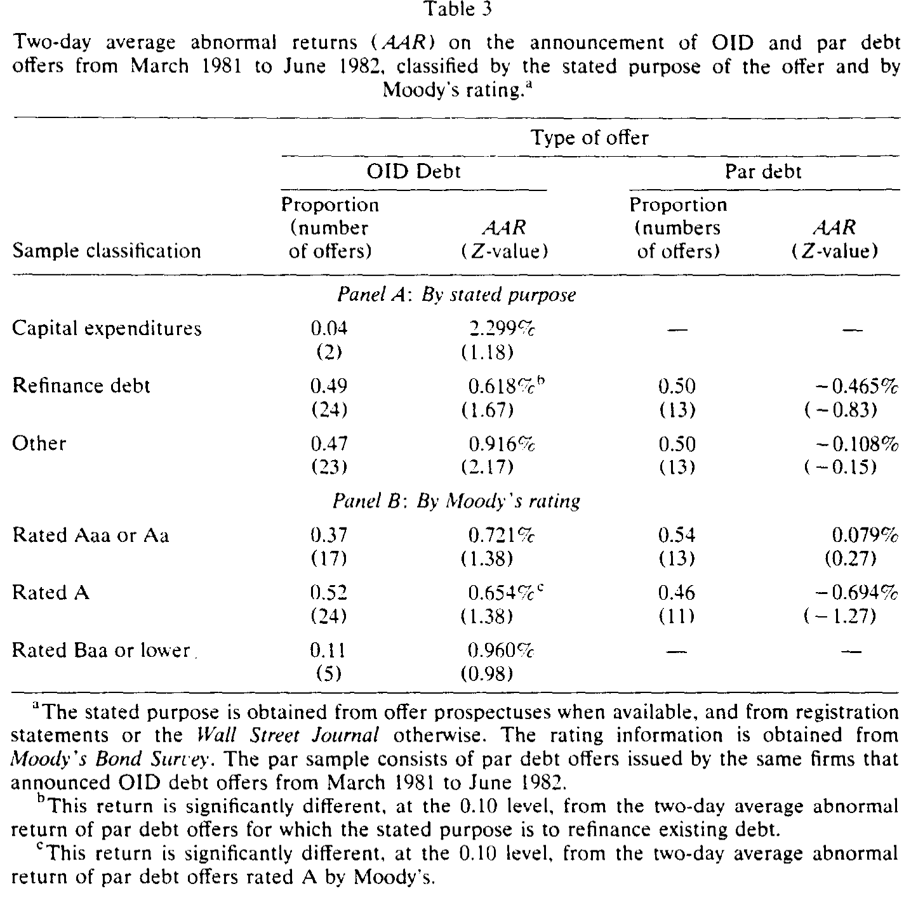
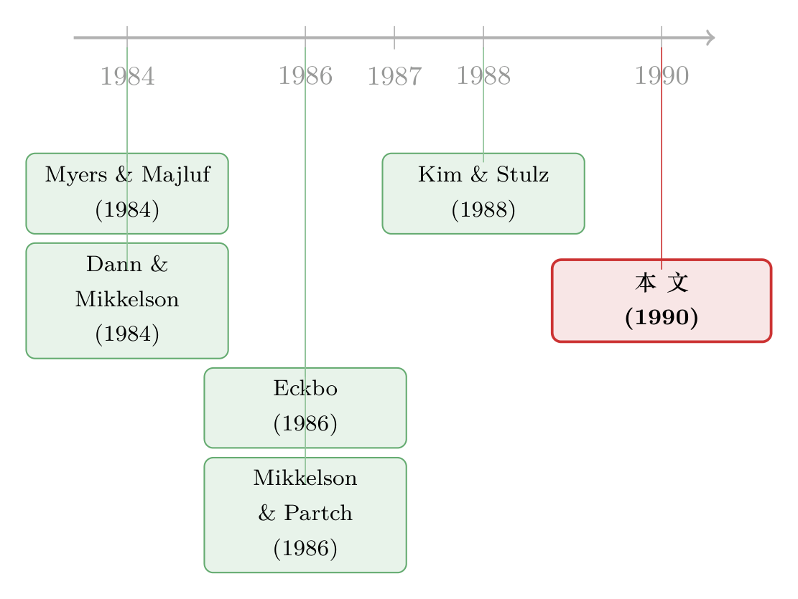

一个税务漏洞，如何让「发债」变成了好消息
本文读的是 Varma & Chambers (1990, Journal of Financial Economics)：在 1981–1982 年那段税法存在「漏洞」的窗口里，公司宣布发行原始发行深度折价债 (OID) 时，股价不跌反涨，两日平均异常收益约 +0.5%（z = 2.89）；而同期同一批公司发行的平价债，股价反应是不显著的 −0.286%（z = −0.69）。等到 1982 年税法堵上漏洞，OID 债的这点「好消息」就彻底消失了。一个税务上的意外，恰好成了检验「融资公告为什么总是坏消息」的天然实验。
1 引言：为什么发债总是个「坏消息」？
先从一个让公司金融学者们头疼了很多年的经验事实说起。
一家公司宣布要发新证券——增发股票、发可转债、发普通债——市场通常不会鼓掌。增发股票，股价应声而跌；哪怕是风险最低的直接债 (straight debt)，市场的反应也大多是「零」或者「微负」。这背后最经典的解释，来自 Myers and Majluf (1984)：经理人比外部投资者更了解公司的真实价值，当他们选择「向外融资」时，理性的投资者会本能地怀疑——是不是因为公司被高估了，经理人才急着把这部分价值「兑现」给新投资者？于是只要一宣布外部融资，股价就先打个折。证券对公司价值越敏感（比如股票，比如违约风险高的债），这个折扣就越深。
这套逻辑漂亮、自洽，而且被一大批事件研究反复验证。Smith (1986) 把当时的证据梳理了一遍，结论是：新债发行，几乎看不到显著的股价反应。
那么，一个自然的问题是：这个「坏消息魔咒」，有没有办法破解？
如果融资公告天生携带负面信息，那是不是意味着，只要某种融资工具能同时带来一笔足够大的「好处」，把这点负面信息盖过去，市场就会改口、甚至给出正向反应？
Varma 和 Chambers 在这篇 1990 年的论文里，找到了一个近乎完美的检验场景。而这个场景的核心，是一个税务上的「漏洞」。
2 OID 债，与那个价值连城的漏洞
我们要讲的主角，叫原始发行深度折价债 (original-issue deep discount, OID)。
它的定义并不复杂。按照美国《国内税收法典》，只要债券的发行价低于其赎回价与到期年限之积的 0.25%，就算「原始发行折价债」——举个例子，一张十年期、赎回价 $1,000 的债券，只要发行价不高于 $975，就属于这一类。而所谓「深度」折价 (deep discount)，是指票面利率被定得远低于市场利率，结果发行价远远低于面值。本文把口径卡得很严：只有发行额不超过本金 80% 的，才算进 OID 样本。这批债券折价有多深？样本里折价的均值是 47.74%、中位数 47.00%——几乎是「半价」发行，而 Eckbo (1986) 研究的普通债折价平均才约 2%。
这种债以前几乎没有高评级公司发。直到 1981 年 3 月，Martin Marietta 成为第一家公开发行 OID 债的高评级公司，闸门才被打开。从 1981 年 3 月到 1982 年 4 月，OID 债一度占到美国国内债务融资的约 14%。
但真正关键的一步，不在债券本身，而在税法。
在 1982 年 7 月之前，由于美国国税局 (IRS) 的一个疏忽，OID 债的发行人每年可以从应税收入里扣除一个固定比例的原始折价，而不是按折价现值的实际变动来扣。结果是：在债券生命的早期，发行人能拿到比平价债更大的利息税盾 (interest tax shield)。
请把这句话读两遍，因为整篇论文的支点就在这里。同样借一笔钱，发 OID 债能比发平价债省下更多的税，而且省得更早、现值更高。Kalotay (1984) 估算过：正是 1981、1982 年那两位数的高利率，把 OID 的税收节省放大到了足以诱使公司动用它的程度。
于是 OID 债公告，就携带了一个平价债公告所没有的信息——只有那些预期未来现金流足够大、能把这块更大税盾吃满的公司，才会选择发 OID 债。换句话说，宣布发 OID 债，等于向市场传递了一个关于未来现金流的更乐观的信号。Dann and Mikkelson (1984) 当年解释可转债与直接债的股价反应差异时，用的也是类似的思路。
接着，一个自然的问题是：那 OID 债的「坏」的一面呢？
确实有。市场普遍相信 OID 债的违约风险更高——因为到期那天要一次性还上一笔大得多的本金，再融资压力陡增。当年的财经媒体（比如 Standard & Poor's Fixed Income Investor）就反复警告，深度折价债可能拖累信用质量。按 Myers and Majluf (1984) 的逻辑，违约风险越高、证券对公司价值越敏感，股价反应就该越负。
所以 OID 债把两股力量摆在了同一张公告桌上：一边是更大的税盾（利好），一边是更高的违约风险（利空）。到底哪一边赢？这本身就是个实证问题。
3 识别策略：一个被税法「掐出来」的自然实验
这篇论文最聪明的地方，不在于它用了多复杂的计量，而在于它选样本的方式——让税法自己划出对照组。
研究用的是标准的事件研究 (event study)。具体做法沿用 Mikkelson and Partch (1986)：对每只股票，用市场模型 (market model) 估计正常收益，估计窗口取公告日前 200 天起、共 140 个交易日；市场收益用 CRSP 等权指数代理。然后计算公告日（day 0）与前一交易日（day −1）这两日的异常收益：
$$ AR_i = R_i - \hat{E}[R_i] $$
为了让不同股票的异常收益可比，再除以市场模型预测的标准差，得到标准化异常收益 (standardized abnormal return)：
$$ SAR_i = \frac{AR_i}{\hat{\sigma}_i} $$
最后，把所有股票的标准化异常收益加总、除以样本数的平方根，得到检验统计量：
$$ z = \frac{\sum_{i=1}^{N} SAR_i}{\sqrt{N}} $$
方法本身是教科书式的。真正的「识别」藏在三个样本的设计里：
- 样本一（处理组）：1981 年 3 月至 1982 年 6 月宣布的 OID 债，共
49笔、来自42家公司——这是税收优惠还在的时候。 - 样本二（同期对照）：同一批公司在同一时段发行的平价债，共
26笔、来自14家公司。用同一批公司，是为了把公司层面那些说不清的差异（行业、规模、治理）尽量对冲掉。 - 样本三（事后对照）：1982 年 7 月至 1987 年 12 月宣布的 OID 债，共
6笔——这是税收优惠被《税收公平与财政责任法》(TEFRA) 抹掉之后的窗口。1982 年 9 月通过的 TEFRA 规定，1982 年 7 月 1 日之后发行的 OID 债不再享受那项扣税待遇，此后公司发 OID 债的热情也急转直下。
你看，这就是一个近乎双重差分 (difference-in-differences, DiD) 的结构：「债券类型」（OID vs 平价）×「税收制度」（漏洞前 vs 漏洞后）。如果 OID 债公告的正向反应真是税收优惠带来的，那它就该只出现在样本一里；样本二（同期平价债）和样本三（税改后 OID）都该看不到。
4 主要结果：好消息只在「有漏洞」的那扇窗里
结果干净得令人满意。
漏洞还在的 OID 债（样本一）：两日平均异常收益显著为正，约 +0.5%，z 值高达 2.89；67% 的异常收益为正（即为负的比例只有 0.33），Wilcoxon 符号秩检验在 0.02 水平上显著。这是一个与「发债=坏消息」直接相悖的结果。
同期平价债（样本二）：平均异常收益是 −0.286%，z 值 −0.69，统计上与零无异。这正是 Smith (1986)、Eckbo (1986)、Mikkelson and Partch (1986) 一路看到的「直接债的零反应」。更关键的是，OID 与平价债两者收益之差，在 0.05 水平上显著——同一批公司、同一时段，仅仅因为债券「设计」不同，市场就给出了截然不同的评价。
税改后的 OID 债（样本三）：平均异常收益是 −2.177%，在 0.10 水平上显著异于零，也显著异于样本一那个正的 0.5%。换句话说，税收优惠一旦拿掉，OID 债不但不再是好消息，反而退回到了「发债=坏消息」的老剧本里。
三个样本连起来读，叙事就完整了：好消息只出现在 OID 债 × 税收漏洞这一格。换一个债券类型（平价债），没有；换一个时段（税改后），也没有。这正是「财务创新带来的真实好处，抵消了外部融资天然的负面信息效应」的最直接证据。
5 一次漂亮的反转：把「违约风险」这个嫌疑人请出去
到这里，怀疑论者会立刻举手：会不会 OID 和平价债的股价反应差异，根本不是税收造成的，而是因为两个样本在某个重要特征上系统性地不同？比如——募资用途不同，或者违约风险不同？
作者于是做了横截面切分，分别按发行目的和穆迪评级把样本拆开。结果见表 3。

Table 3
先看用途（Panel A）。OID 债在三类用途——资本支出、债务再融资、其他——上的异常收益全部为正；平价债则全部为负（虽都不显著）。最干净的对照来自「再融资」这一类：这类发行本质上是债换债、不动公司资产，几乎是一次「纯粹的资本结构变化」，唯一引入的新东西就是 OID 带来的税收好处。而恰恰是这一类，OID 债的异常收益（约 +0.62%，z = 1.67）显著高于平价债（约 −0.465%，z = −0.83），差异在 0.10 水平显著。这等于说：当你把其他干扰都剥掉、只留下税收这一个变量时，OID 的溢价依然在。
再看评级（Panel B），这里出现了真正的反转。 按 Myers and Majluf (1984)，违约风险越高，股价反应应该越差。可数据偏偏反着来：OID 样本里只有 37% 是 Aaa/Aa（平价债是 54%），而 11% 的 OID 落在 Baa 或更低（平价债里一笔都没有）——也就是说，OID 样本明明更「危险」，却对应着正的异常收益；平价样本更「安全」，却对应着零反应。在评级相近、可比的 A 级里，OID 债（约 +0.65%）依然显著高于平价债（约 −0.69%，z = −1.27），差异在 0.10 水平显著。
这与 Eckbo (1986)、Mikkelson and Partch (1986) 的发现一致：在直接债里，评级和异常收益之间根本找不到 Myers-Majluf 所预言的那种稳定关系。于是作者得出结论：违约风险差异，解释不了 OID 与平价债之间的股价反应差异。 嫌疑人被请了出去，剩下的解释，就只有税收。
6 文献脉络：一条关于「融资公告信息含量」的暗线
把这篇论文放回它所在的研究脉络里，会看得更清楚。
源头是 Myers and Majluf (1984)：用信息不对称给出「为什么外部融资是坏消息」的理论骨架。紧接着，实证派开始逐一检验不同证券的公告效应——Dann and Mikkelson (1984) 看可转债与直接债，Smith (1986) 做综述，Eckbo (1986)、Mikkelson and Partch (1986) 系统刻画了债券发行的估值效应，并奠定了本文沿用的事件研究方法论。
然后，一批论文开始反向思考：有没有什么融资活动，反而能引发正向反应？ Schipper and Smith (1986) 找到了股权分拆 (equity carve-out)，Wruck (1989) 找到了私募股权，James (1987) 找到了银行贷款的「认证效应」。和本文最接近的，是 Kim and Stulz (1988)——他们发现欧洲债券 (Eurobond) 发行也有正向股价反应，并归因于欧洲债市里那种「税收驱动的、临时性的融资便宜货」。
本文正好坐在这条线的一个独特位置上：它不是去找一种新组织结构（像分拆），也不是去找认证（像银行贷款），而是抓住了一个由税法疏忽制造、又被税法修订抹去的天然实验，干净地把「税收好处抵消负面信息」这个机制单独拎了出来。Miller (1986) 当年评价 OID 是「最能浓缩金融创新里那些奇异而常常无意为之的元素」的创新，本文恰好给这句话提供了实证注脚。

（关于「资本结构变化本身携带什么信息」，可参见《镜子碎了：当「加杠杆」和「去杠杆」说的根本不是同一件事》；关于税盾价值的一个常见误解，可参见《税盾的价值，并不等于税盾的现值》；而把税收拧成公司金融主线的综述，见《100% 借债，还是一分不借？》。可转债作为「不好意思直接增发」的信息逻辑，则见《走后门的股票》。）
7 评论与延伸（Q&A + 研究方向）
(a) 几个可能的疑问
Q：样本三只有 6 笔 OID 债，凭这么小的样本说「税改后好消息消失了」，可信吗？
这是本文最该打折扣的地方。
−2.177%（z =−1.75，仅在 0.10 水平显著）建立在 6 个观测上，统计功效很弱，单看它几乎说明不了什么。它的说服力其实是借来的——靠的是样本一那个 z = 2.89 的强结果，以及税改这个清晰的制度断点。把三者放在一起，叙事才成立；单拎样本三，证据是脆的。
Q：OID 债公告的正向反应，会不会只是「公司选择发 OID」这个行为本身的选择效应，而非税收？
两者在本文里其实是同一回事：正因为 OID 有更大的税盾，只有预期现金流足够好的公司才会去发它，于是「选择发 OID」本身就是个乐观信号。本文没法把「税收信号」和「现金流信号」彻底分开——但这恰恰是机制的一部分，而不是污染。真正被排除掉的竞争解释，是用途和违约风险。
Q：用「同一批公司」的平价债做对照，是优点还是隐患？
是这篇论文识别的精华，但也有代价。优点是公司固定特征被对冲掉了。隐患是：一家公司选择在某笔融资上用 OID、另一笔用平价，这个选择本身可能与公告时点的私有信息相关——对照组并非随机分配，而是企业自选的。所以严格说，这是一个「准自然实验」，不是干净的随机化。
Q：两日 +0.5% 这个量级，是不是太小了，值得这么大惊小怪？
量级确实不大，但方向才是重点。在一个「发债普遍是零或负反应」的世界里，一个显著为正的债券公告效应本身就是异类。它的价值不在幅度，而在于它打破了 Myers-Majluf 框架下「外部融资必然挨打」的默认结论。
Q：评级那个反转（更risky 却收益更高）会不会只是因为 OID 样本里掺了垃圾级、噪声大？
作者用「评级可比」的 A 级子样本回应了这一点：在 A 级里 OID 仍显著高于平价。而且这个「评级与异常收益无稳定关系」的发现，与 Eckbo (1986)、Mikkelson and Partch (1986) 独立得到的结论一致，不像是单一样本的偶然。
Q：这个结论能推广到其他金融创新吗？
作者自己在结论里很诚实地留了口：「是否在更广泛的金融创新中也能观察到类似结果，仍是未来研究的问题。」本文证明的是一个存在性命题——创新带来的真实好处可以抵消负面信息效应，而不是一条普遍规律。
(b) 几个可能的研究问题与提案
1. 把视角搬到债券持有人：OID 债公告时，公司债价格怎么动？
【经济故事】股价涨，可能是因为税盾把价值做大了（蛋糕变大），也可能是因为财富从债权人转移给了股东（蛋糕重分）。OID 债违约风险更高，老债权人很可能受损。只看股价分不清这两者，但同时看股、债两边就能。 【可行性】中。需要公告窗口内同一发行人的存量公司债成交价（如 TRACE 之后的时代，或更早的 Lehman/Datastream 债券库），样本可能偏薄。识别上可比照本文做股债双重事件研究。
2. 用现代「税改断点」复制这个设计。
【经济故事】TEFRA 是一次性的制度冲击。此后几十年里，美国与各国又有多次针对债务利息可扣除性的税法变动（如利息扣除上限）。每一次都可以构成一个新的「漏洞开/关」实验，检验「税收好处抵消融资负面信息」是否稳健。 【可行性】高。税改时点是公开、外生的；融资公告与股价数据齐全。是一个可直接落地的 DiD 设计。
3. 外资持有人会不会改变这条机制？
【经济故事】税盾的价值取决于持有人的税收地位。当债券的边际买家是免税或跨境的外国投资者时，OID 那种「发行人税盾」与「持有人税负」的错配会被放大或抵消，公告效应可能因投资者基础不同而异。 【可行性】中。需要发行层面的投资者结构数据（往往不公开），可考虑用「是否面向海外发行 / Reg S 份额」做代理，识别难度偏高。
4. 深度折价债与「再融资墙」：到期那笔大本金，真的提高了事后违约吗？
【经济故事】市场当年担心 OID 债加大再融资压力。但本文只看了公告时的预期反应，没追踪事后结局。把这批 OID 债的实际违约/再融资记录跟踪到底，可以检验市场的担忧是否兑现。 【可行性】高。样本虽小但可逐笔手工追踪到期与违约结果，是一篇干净的「事后验尸」式实证。
8 我的判断
这篇论文的贡献，是用一个制度上的偶然（IRS 的疏忽 + TEFRA 的修补）把一个本来纠缠不清的因果问题切得异常干净。它没有花哨的模型，却凭样本设计本身完成了识别：同一批公司、同期、跨债券类型的对照，加上一个清晰的税法断点，让「财务创新的真实好处能否抵消融资的负面信息」这个命题第一次有了直接证据。在「外部融资必然是坏消息」几乎成为共识的 1980 年代，这是个有分量的反例。
但它的软肋也很明显，而且全都集中在样本量上：处理组 49 笔、同期对照 26 笔、税改后只有 6 笔。后两个样本的统计功效都很弱，结论的稳健性更多来自叙事的一致性，而非任何单一检验的力度。此外，对照组是企业自选而非随机分配，选择效应与机制本身缠在一起——本文的处理是把它解释成「机制的一部分」，这在逻辑上自洽，但也意味着我们无法把「税收信号」与「现金流信号」分开称重。
如果让我说接下来最想看到什么：一是把债券价格一并纳入，看清这 0.5% 究竟是「蛋糕变大」还是「从债权人那里搬来的」；二是用后来多次税法变动去复制这个断点设计，把一个 1990 年的存在性命题，做成一条可重复检验的规律。
参考文献
Dann, L. Y., and W. H. Mikkelson (1984). Convertible debt issuance, capital structure change and financing-related information: Some new evidence. Journal of Financial Economics 13(2), 157–186.
Eckbo, B. E. (1986). Valuation effects of corporate debt offerings. Journal of Financial Economics 15(1–2), 119–151.
Finnerty, J. D. (1988). Financial engineering in corporate finance: An overview. Financial Management 17(4), 14–33.
James, C. (1987). Some evidence on the uniqueness of bank loans. Journal of Financial Economics 19(2), 217–235.
Kalotay, A. J. (1984). An analysis of original issue discount bonds. Financial Management 13(3), 29–38.
Kim, Y. C., and R. M. Stulz (1988). The Eurobond market and corporate financial policy: A test of the clientele hypothesis. Journal of Financial Economics 22(2), 189–205.
Mikkelson, W. H., and M. M. Partch (1986). Valuation effects of security offerings and the issuance process. Journal of Financial Economics 15(1–2), 31–60.
Miller, M. H. (1986). Financial innovation: The last twenty years and the next. Journal of Financial and Quantitative Analysis 21(4), 459–471.
Myers, S. C., and N. S. Majluf (1984). Corporate financing and investment decisions when firms have information that investors do not have. Journal of Financial Economics 13(2), 187–221.
Schipper, K., and A. Smith (1986). A comparison of equity carve-outs and seasoned equity offerings: Share price effects and corporate restructuring. Journal of Financial Economics 15(1–2), 153–186.
Smith, C. W. (1986). Investment banking and the capital acquisition process. Journal of Financial Economics 15(1–2), 3–29.
Wruck, K. H. (1989). Equity ownership concentration and firm value: Evidence from private equity financings. Journal of Financial Economics 23(1), 3–28.